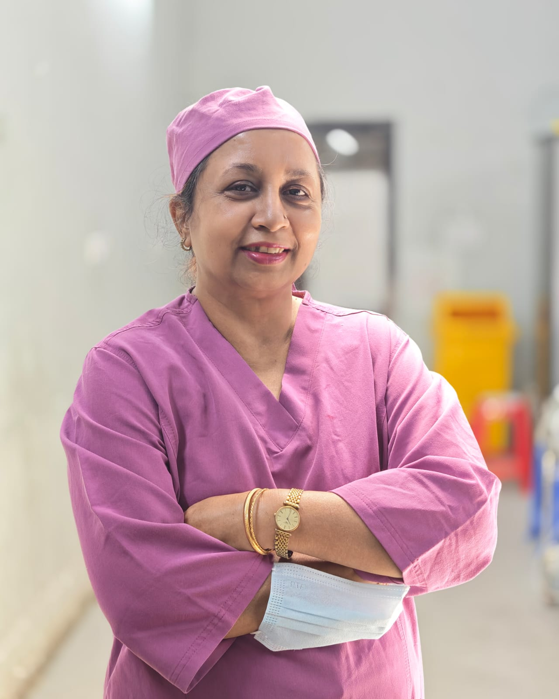

Head & neck cancer surgery
Surgery for cancer of the oral cavity, thyroid and salivary glands, including neck dissection and reconstruction when the resection calls for it.
First female Professor of ENT in Bangladesh’s government sector
অধ্যাপক ডা. হুসনে কমর ওসমানী
Otolaryngology · Head & Neck Surgery · Dhaka
Professor of Otolaryngology at Dhaka Medical College, where her days now centre on head and neck cancer surgery and the hospital’s Cochlear Implant Programme. She is also the first woman to hold a professorship in the discipline in Bangladesh’s government sector.

The first woman to hold an ENT professorship in Bangladesh’s government sector.
Bangladesh has taught otolaryngology in its government medical colleges for as long as it’s had them, and until 2024, every chair in the subject had been held by a man. When Professor Osmany started her career, only four other female otolaryngologists were practising in the country, all in the private sector. Today, somewhere between fifty and sixty female otolaryngologists practise across Bangladesh, or are in training: a field considerably less lopsided than the one she started in.
Dhaka Medical College Hospital
A cochlear implant bypasses the damaged part of the inner ear and stimulates the hearing nerve directly. Fitted early in a child born deaf, and followed by patient rehabilitation, it can be the difference between silence and spoken language.
Professor Osmany directs the programme at Dhaka Medical College Hospital: the assessment, the surgery, the switch-on, and the long tail of speech therapy afterward that actually decides whether an implant succeeds.
The government appointed her Programme Director in 2025. It’s now one of two fixed points in her week, alongside her head and neck cancer practice: Wednesdays at Dhaka Medical College belong to the cochlear implant clinic.
Clinical expertise
Surgery for cancer of the oral cavity, thyroid and salivary glands, including neck dissection and reconstruction when the resection calls for it.
Hearing loss in children and adults, audiological assessment, implant candidacy, surgery and switch-on, hearing aids and rehabilitation.
Chronic ear infection, perforated eardrum, cortical mastoidectomy, myringoplasty and myringotomy.
Allergic rhinitis, chronic sinusitis, nasal polyps, deviated septum and endoscopic sinus surgery.
Hoarseness, tonsil and adenoid disease, difficulty swallowing, sleep apnoea, and tracheostomy.
Glue ear, recurrent tonsillitis and adenotonsillectomy, snoring and sleep-disordered breathing.
Chambers
Consultations
Appointments are taken by telephone at both chambers. It’s worth calling ahead, since clinics occasionally move for operating lists and hospital duties.